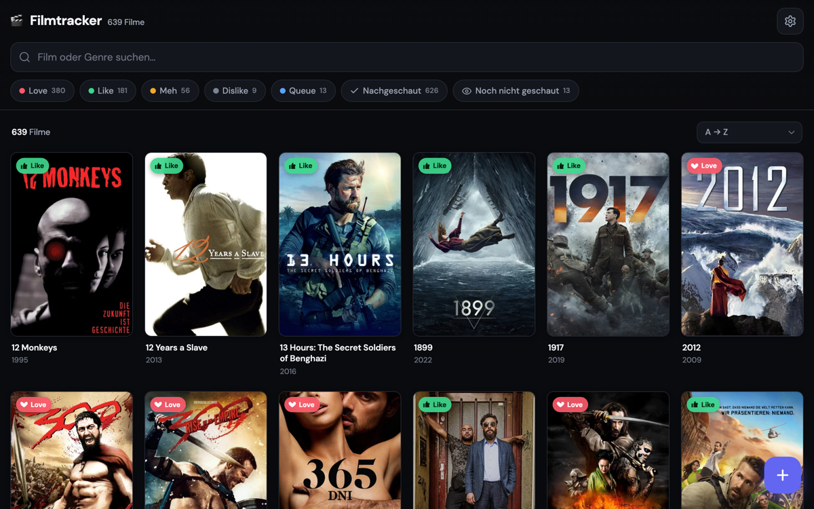

Filmtracker
ProblemDie meisten führen ihre Filme in einer Excel-Liste oder gar nicht — Titel raussuchen, Genre und Jahr von Hand eintragen, kein Poster, nichts durchsuchbar.Most people track films in a spreadsheet or not at all — looking up titles, typing genre and year by hand, no posters, nothing searchable.
LösungSolutionEine öffentliche Film-Datenbank: eigenes Konto anlegen und direkt über die TMDb-API nach Filmen suchen — Poster, Genre und Beschreibung kommen automatisch mit. Jede Bibliothek ist privat. Login selbst gebaut (PBKDF2 + signierte Session-Cookies, kein Auth-Anbieter).A public movie database: create your own account and search films directly via the TMDb API — poster, genre and description come automatically. Every library is private. Login built from scratch (PBKDF2 + signed session cookies, no auth provider).